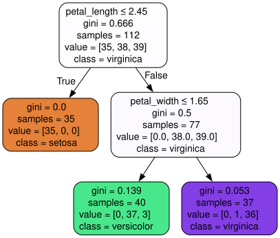
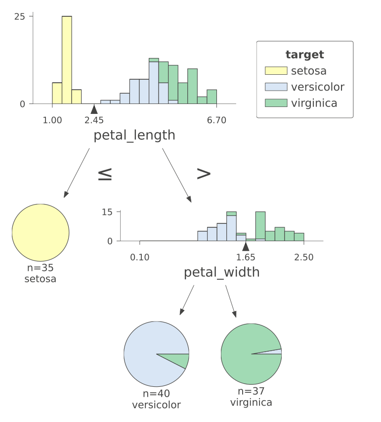
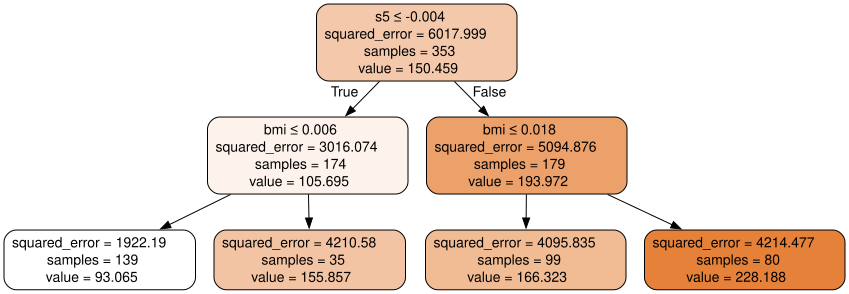
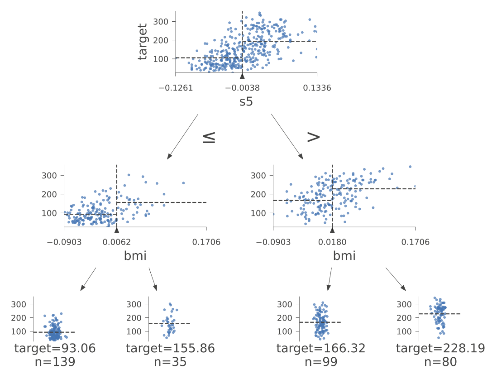

Comprendre les arbres de décision#
Un arbre de décision est un des modèles de machine learning les plus intuitifs : il prend des décisions en posant une suite de questions simples de type oui/non, exactement comme dans un jeu de « Qui est-ce ? ».
L’idée en une image : imaginez un médecin qui diagnostique un patient. Il demande :
« Température > 38° ? » Oui → il demande une autre question. Non → autre question.
« Toux sèche ? » Oui → … Non → …
Après quelques questions, il arrive à un diagnostic.
Un arbre de décision fait exactement la même chose, mais les questions et leurs seuils sont appris automatiquement à partir des données.
Dans ce notebook on va :
Voir à quoi ressemble concrètement un arbre entraîné (sur le dataset Iris) ;
Comprendre comment il fait ses prédictions (classification et probabilités) ;
Découvrir comment il apprend (algorithme CART, indice de Gini) ;
Voir sa variante pour la régression (prédire un nombre au lieu d’une classe).
import numpy as np
import matplotlib.pyplot as plt
from sklearn.tree import DecisionTreeClassifier
from sklearn.model_selection import train_test_split
Le modèle construit par l’algorithme — Classification#
On va entraîner un arbre de décision sur le dataset Iris (un classique) : il contient 150 fleurs d’iris appartenant à 3 espèces (setosa, versicolor, virginica), décrites par la longueur et la largeur de leurs pétales et sépales.
Objectif : à partir des mesures d’une fleur, prédire son espèce. C’est donc un problème de classification (la sortie est une catégorie, pas un nombre).
from sklearn.datasets import load_iris
iris = load_iris()
X = iris.data[:, 2:] # petal length and petal width
y = iris.target
X_train, X_test, y_train, y_test = train_test_split(X, y, test_size=.25, random_state=3)
tree_clf = DecisionTreeClassifier(max_depth=2, random_state=2)
tree_clf.fit(X_train, y_train)
DecisionTreeClassifier(max_depth=2, random_state=2)In a Jupyter environment, please rerun this cell to show the HTML representation or trust the notebook.
On GitHub, the HTML representation is unable to render, please try loading this page with nbviewer.org.
DecisionTreeClassifier(max_depth=2, random_state=2)
iris.target_names
array(['setosa', 'versicolor', 'virginica'], dtype='<U10')
Structure de l’arbre#
Une fois l’arbre entraîné, on peut le visualiser directement — c’est l’un des grands atouts de ce modèle. Chaque nœud correspond à une question posée sur une feature, et chaque feuille à une prédiction.
from sklearn.tree import export_graphviz
from graphviz import Source
dot_data = export_graphviz(tree_clf, out_file=None,
feature_names=["petal_length", "petal_width"],
class_names=iris.target_names,
filled=True, rounded=True,
special_characters=True)
Source(dot_data)

Lire l’arbre#
Comment classer un iris ? On démarre tout en haut (la racine, niveau 0) et on descend en répondant aux questions :
« \(\mathit{petal\_length} \le 2{,}35\) ? »
Oui → on descend à gauche. C’est déjà une feuille (un nœud sans enfant) → le modèle prédit setosa. Terminé !
Non → on descend à droite et on continue.
On recommence avec la question suivante, jusqu’à atteindre une feuille.
Un arbre de décision, c’est donc littéralement un enchaînement de if / else appris automatiquement.
Ce que contient chaque nœud#
samples: le nombre de fleurs d’entraînement qui « passent » par ce nœud. Tout en haut : toutes les fleurs. Plus on descend, plus les effectifs diminuent à mesure que les données se séparent.value: le nombre de fleurs de chaque classe dans ce nœud. Par exemple[0, 38, 3]signifie 0 setosa, 38 versicolor, 3 virginica.class: la classe majoritaire, celle que le modèle prédit si on s’arrête à ce nœud.gini: l’indice d”impureté du nœud (expliqué juste après).
L’indice de Gini — à quoi il sert#
L’idée intuitive : le Gini mesure à quel point un nœud est « mélangé ».
Si toutes les fleurs d’un nœud sont de la même classe → nœud pur → Gini = 0. Parfait, on peut prédire avec certitude.
Si les classes sont équitablement mélangées → nœud très impur → Gini proche de son maximum.
La formule :
\( \Large{ G_i = 1 - \sum_{k=1}^{n} p_{i,k}^2 } \)
Décodage :
\(i\) : l’indice du nœud (on calcule un Gini par nœud).
\(k\) : l’indice de la classe (setosa, versicolor, virginica → \(k = 1, 2, 3\)).
\(p_{i,k}\) : la proportion d’instances de la classe \(k\) dans le nœud \(i\). Par exemple si le nœud contient
[0, 38, 3]sur 41 fleurs, alors \(p_{i,\text{setosa}} = 0\), \(p_{i,\text{versicolor}} = \frac{38}{41} \approx 0{,}93\), \(p_{i,\text{virginica}} = \frac{3}{41} \approx 0{,}07\).On fait la somme des carrés des proportions, et on soustrait à 1.
Vérification rapide :
Nœud 100% pur (une seule classe) : \(p = 1\) pour cette classe, 0 pour les autres. Gini = \(1 - 1^2 = 0\). ✔
Nœud parfaitement mélangé entre 2 classes (50/50) : Gini = \(1 - (0{,}5^2 + 0{,}5^2) = 1 - 0{,}5 = 0{,}5\). ✔
Plus le Gini est faible, plus le nœud est « homogène », et meilleure est la prédiction qu’on peut en tirer. L’apprentissage de l’arbre cherche justement à créer des nœuds les plus purs possibles à chaque split.
Choix des seuils lors de l’apprentissage#
On voit que la racine pose la question « \(\mathit{petal\_length} \le 2{,}35\) ? ». Mais pourquoi \(2{,}35\) et pas \(3\), \(1{,}8\) ou autre chose ? Et pourquoi utiliser petal_length et pas petal_width ?
La réponse : l’algorithme a testé plein de seuils et plein de features, et a gardé le couple (feature, seuil) qui sépare le mieux les classes (c’est-à-dire qui rend les deux sous-groupes issus du split les plus « purs » possibles, au sens du Gini).
L’outil dtreeviz ci-dessous permet de voir les distributions sous chaque nœud et de comprendre visuellement pourquoi l’algorithme a choisi ces seuils.
import dtreeviz
viz_model = dtreeviz.model(tree_clf, X_train=X_train, y_train=y_train,
feature_names=["petal_length", "petal_width"],
target_name="target",
class_names=list(iris.target_names))
viz_model.view(fontname="DejaVu Sans", scale=3)

Les arbres de décision sont des modèles « boîte blanche », ou encore interprétables : on peut facilement lire leurs décisions et expliquer pourquoi ils prédisent telle classe. Ce n’est pas le cas de la plupart des algorithmes de machine learning (réseaux de neurones, forêts aléatoires, SVM…), qu’on qualifie à l’inverse de « boîtes noires ».
🎯 À quoi sert cette interprétabilité en data science ?
C’est loin d’être un détail esthétique — dans beaucoup de contextes, l’interprétabilité est obligatoire ou critique :
Santé : un médecin qui utilise un modèle pour poser un diagnostic veut comprendre pourquoi le modèle recommande tel traitement. Une boîte noire qui dit « proba(cancer) = 0,87 » sans explication est inutilisable en pratique.
Banque, assurance, crédit : le RGPD et d’autres réglementations donnent aux clients le droit à une explication quand une décision automatisée les affecte (refus de crédit, tarif d’assurance…). Un arbre de décision permet de répondre : « votre dossier a été refusé parce que votre ratio d’endettement > 42% et votre ancienneté < 2 ans ».
Debug et confiance : quand un modèle se trompe, pouvoir lire ses règles permet de comprendre l’erreur et de l’améliorer. Avec une boîte noire, on subit.
Détection de biais : un arbre qui se met à segmenter sur une variable sensible (genre, origine, âge) le montre noir sur blanc. Plus difficile à repérer dans un réseau de neurones.
Autres avantages pratiques des arbres :
Pas besoin de normaliser les features (contrairement à KNN, SVM, NN) — l’arbre découpe par seuils, donc l’échelle n’a pas d’importance.
Gère naturellement les features numériques et catégorielles.
Capture des relations non linéaires sans avoir à créer des features polynomiales.
Limite à connaître : un arbre seul a tendance à overfitter (sur-apprendre). D’où l’intérêt des forêts aléatoires et du gradient boosting (XGBoost, LightGBM), qui combinent plein d’arbres pour gagner en performance… au prix d’une partie de l’interprétabilité.
Estimation de la probabilité d’appartenance à une classe \(k\)#
Un arbre ne prédit pas seulement une classe, il peut aussi donner une probabilité pour chaque classe. C’est utile quand on veut savoir à quel point le modèle est « sûr » de sa prédiction.
Le principe : quand une fleur arrive dans une feuille de l’arbre, on regarde la composition des fleurs d’entraînement qui sont tombées dans cette même feuille pendant l’apprentissage. La probabilité de chaque classe est simplement sa proportion dans la feuille.
Exemple. Supposons un iris avec des pétales de \(4{,}8\) cm de longueur et \(1{,}4\) cm de largeur. En descendant l’arbre, on arrive à la feuille de profondeur 2 à gauche, qui contient 41 fleurs d’entraînement réparties ainsi : [0, 38, 3]. Les probabilités estimées sont donc :
\(p_{\text{setosa}} = \frac{0}{41} = 0\)
\(p_{\text{versicolor}} = \frac{38}{41} \approx 0{,}93\)
\(p_{\text{virginica}} = \frac{3}{41} \approx 0{,}07\)
Remarque importante : toutes les fleurs qui tombent dans la même feuille auront exactement les mêmes probabilités prédites. L’arbre ne « raffine » pas au sein d’une feuille. C’est une des raisons pour lesquelles les probabilités d’un arbre seul sont souvent grossières — les ensembles (random forest, gradient boosting) les lissent beaucoup mieux.
np.round(tree_clf.predict_proba([[4.8, 1.4]]), 2)
array([[0. , 0.92, 0.08]])
La phase d’apprentissage#
L’algorithme CART (Classification And Regression Tree) est la méthode utilisée par scikit-learn pour construire l’arbre. Son fonctionnement est d’une simplicité déconcertante :
À chaque nœud, l’algorithme essaie toutes les features et tous les seuils possibles.
Il garde le couple (feature \(k\), seuil \(t_k\)) qui minimise une fonction de coût — autrement dit, celui qui produit les deux sous-groupes les plus « purs » possible.
Il recommence récursivement sur chaque sous-groupe.
Il s’arrête quand un critère d’arrêt est atteint (profondeur max, nœud pur, trop peu d’échantillons…).
La fonction de coût#
\( \Large{ J(k, t_k) = \frac{m_{\mathit{left}}}{m} G_{\mathit{left}} + \frac{m_{\mathit{right}}}{m} G_{\mathit{right}} } \)
Décodage :
\(k\) : la feature candidate (ex :
petal_length).\(t_k\) : le seuil candidat (ex : \(2{,}35\)).
\(m\) : le nombre total d’échantillons dans le nœud courant.
\(m_{\mathit{left}}\) et \(m_{\mathit{right}}\) : combien d’échantillons tombent à gauche (ceux qui vérifient \(X_k \le t_k\)) et à droite après le split.
\(G_{\mathit{left}}\), \(G_{\mathit{right}}\) : le Gini (impureté) de chaque sous-groupe.
Les rapports \(\frac{m_{\mathit{left}}}{m}\) et \(\frac{m_{\mathit{right}}}{m}\) sont des pondérations : un sous-groupe qui ne contient que 2 fleurs pèse moins qu’un qui en contient 100.
En langage courant : le coût est la moyenne pondérée des impuretés des deux sous-groupes issus du split. On cherche le split qui minimise l’impureté moyenne des enfants — c’est-à-dire celui qui rend les classes le plus séparées possible.
Critère d’arrêt et hyperparamètres#
L’algorithme s’arrête lorsque la profondeur maximale max_depth est atteinte (ici fixée à 2). max_depth est un exemple d”hyperparamètre — un réglage que l’utilisateur choisit avant l’entraînement et qui contrôle le comportement de l’algorithme. D’autres hyperparamètres utiles :
min_samples_split: nombre minimum d’échantillons pour autoriser un split ;min_samples_leaf: nombre minimum d’échantillons dans une feuille ;max_leaf_nodes: nombre maximum de feuilles.
Tous servent à la même chose : contrôler la complexité de l’arbre et éviter l’overfitting. Un arbre trop profond apprend « par cœur » ses données d’entraînement et généralise mal. On les ajuste typiquement par validation croisée (voir un prochain notebook).
tree_clf.score(X_train, y_train)
0.9642857142857143
tree_clf.score(X_test, y_test)
0.9473684210526315
Complexité de l’algorithme#
Notations : \(m\) = nombre d’échantillons d’entraînement, \(n\) = nombre de features.
Décision (prédiction)#
Pour classer un nouvel échantillon, il suffit de descendre l’arbre de la racine jusqu’à une feuille en répondant à une question à chaque niveau. Comme les arbres construits par CART sont généralement à peu près équilibrés, leur profondeur est en \(\log_2(m)\). La décision est donc en \(\mathcal{O}(\log_2(m))\), quel que soit le nombre de features.
C’est extrêmement rapide : 1 million d’échantillons → environ 20 questions à poser pour classer un nouvel exemple. C’est ce qui rend les arbres attractifs pour les systèmes qui doivent prédire en temps réel.
Apprentissage#
À chaque nœud, l’algorithme doit comparer toutes les features et tous les seuils candidats, pour chaque donnée. Sur un arbre équilibré, cela donne une complexité totale en \(\mathcal{O}(n \times m \log_2(m))\).
En pratique : l’entraînement est rapide sur des jeux de taille modeste (< 1M lignes). Sur de gros jeux, on préférera des implémentations optimisées comme LightGBM ou XGBoost, qui utilisent des histogrammes pour ne pas avoir à trier les valeurs continues à chaque split.
Régression#
Jusqu’ici, l’arbre prédisait une classe (setosa / versicolor / virginica). On peut aussi utiliser exactement la même structure d’arbre pour prédire un nombre continu — par exemple un prix, une température, une note.
Exemple de problèmes de régression :
Prédire le prix d’une maison à partir de ses caractéristiques.
Prédire la progression d’une maladie à partir de mesures biologiques (c’est le dataset
diabetesqu’on va utiliser ci-dessous).Prédire une température en fonction de l’heure, de la saison, de la météo…
Deux différences avec la classification :
Ce que contiennent les feuilles. En classification, chaque feuille prédit une classe. En régression, chaque feuille prédit un nombre — en pratique, la moyenne des \(y\) d’entraînement tombés dans cette feuille.
Le critère de split. On ne peut plus utiliser le Gini (qui parle de classes). À la place, on utilise la MSE (Mean Squared Error), c’est-à-dire la moyenne des carrés des écarts à la moyenne dans chaque sous-groupe. L’algorithme cherche le split qui minimise cette MSE pondérée — autrement dit, qui regroupe dans chaque sous-groupe des valeurs \(y\) les plus proches possibles les unes des autres.
Le reste (descente dans l’arbre, hyperparamètres, complexité) fonctionne exactement pareil.
from sklearn.datasets import load_diabetes
from sklearn.tree import DecisionTreeRegressor
from sklearn.metrics import mean_absolute_error
diabetes = load_diabetes()
print(diabetes.DESCR)
.. _diabetes_dataset:
Diabetes dataset
----------------
Ten baseline variables, age, sex, body mass index, average blood
pressure, and six blood serum measurements were obtained for each of n =
442 diabetes patients, as well as the response of interest, a
quantitative measure of disease progression one year after baseline.
**Data Set Characteristics:**
:Number of Instances: 442
:Number of Attributes: First 10 columns are numeric predictive values
:Target: Column 11 is a quantitative measure of disease progression one year after baseline
:Attribute Information:
- age age in years
- sex
- bmi body mass index
- bp average blood pressure
- s1 tc, total serum cholesterol
- s2 ldl, low-density lipoproteins
- s3 hdl, high-density lipoproteins
- s4 tch, total cholesterol / HDL
- s5 ltg, possibly log of serum triglycerides level
- s6 glu, blood sugar level
Note: Each of these 10 feature variables have been mean centered and scaled by the standard deviation times the square root of `n_samples` (i.e. the sum of squares of each column totals 1).
Source URL:
https://www4.stat.ncsu.edu/~boos/var.select/diabetes.html
For more information see:
Bradley Efron, Trevor Hastie, Iain Johnstone and Robert Tibshirani (2004) "Least Angle Regression," Annals of Statistics (with discussion), 407-499.
(https://web.stanford.edu/~hastie/Papers/LARS/LeastAngle_2002.pdf)
X_train, X_test, y_train, y_test = train_test_split(
diabetes.data, diabetes.target, test_size=0.2, random_state=2
)
X_train
array([[-0.00188202, -0.04464164, -0.06979687, ..., -0.03949338,
-0.06291688, 0.04034337],
[-0.00914709, -0.04464164, 0.01103904, ..., -0.03949338,
0.01703607, -0.0052198 ],
[ 0.02354575, 0.05068012, -0.02021751, ..., -0.03949338,
-0.09643495, -0.01764613],
...,
[ 0.06350368, 0.05068012, -0.00405033, ..., -0.00259226,
0.08449153, -0.01764613],
[-0.05273755, 0.05068012, -0.01806189, ..., 0.1081111 ,
0.03606033, -0.04249877],
[ 0.00175052, 0.05068012, 0.05954058, ..., 0.1081111 ,
0.06898589, 0.12732762]])
tree_reg = DecisionTreeRegressor(max_depth=2, random_state=2)
tree_reg.fit(X_train, y_train)
DecisionTreeRegressor(max_depth=2, random_state=2)In a Jupyter environment, please rerun this cell to show the HTML representation or trust the notebook.
On GitHub, the HTML representation is unable to render, please try loading this page with nbviewer.org.
DecisionTreeRegressor(max_depth=2, random_state=2)
dot_data = export_graphviz(tree_reg, out_file=None,
feature_names=diabetes.feature_names,
filled=True, rounded=True,
special_characters=True)
Source(dot_data)

viz_model = dtreeviz.model(tree_reg, X_train=X_train, y_train=y_train,
feature_names=diabetes.feature_names,
target_name="target")
viz_model.view(fontname="DejaVu Sans", scale=3)

L’arbre prédit une valeur (un nombre), et non plus une classe. On peut évaluer sa qualité avec des métriques de régression classiques comme la MAE (Mean Absolute Error) : « en moyenne, de combien se trompe-t-on, dans les mêmes unités que la cible ? ».
y_pred = tree_reg.predict(X_test)
mean_absolute_error(y_test, y_pred)
np.float64(47.51175956214455)
y_test
array([ 73., 233., 97., 111., 277., 341., 64., 68., 65., 178., 142.,
77., 244., 115., 258., 87., 220., 86., 74., 132., 136., 220.,
91., 235., 148., 317., 131., 84., 65., 217., 306., 79., 158.,
54., 123., 174., 237., 212., 179., 281., 187., 200., 68., 163.,
141., 202., 178., 242., 47., 131., 243., 142., 200., 89., 232.,
55., 253., 128., 104., 184., 110., 198., 81., 195., 150., 63.,
151., 233., 178., 84., 237., 109., 131., 252., 200., 160., 200.,
51., 111., 77., 201., 88., 78., 243., 268., 55., 270., 288.,
91.])
y_pred
array([166.32323232, 228.1875 , 93.0647482 , 93.0647482 ,
228.1875 , 228.1875 , 93.0647482 , 93.0647482 ,
93.0647482 , 228.1875 , 166.32323232, 93.0647482 ,
155.85714286, 166.32323232, 228.1875 , 93.0647482 ,
228.1875 , 166.32323232, 166.32323232, 93.0647482 ,
155.85714286, 228.1875 , 166.32323232, 166.32323232,
93.0647482 , 228.1875 , 155.85714286, 93.0647482 ,
93.0647482 , 228.1875 , 228.1875 , 93.0647482 ,
93.0647482 , 93.0647482 , 166.32323232, 166.32323232,
228.1875 , 166.32323232, 93.0647482 , 166.32323232,
155.85714286, 93.0647482 , 228.1875 , 166.32323232,
228.1875 , 166.32323232, 155.85714286, 228.1875 ,
93.0647482 , 166.32323232, 228.1875 , 155.85714286,
93.0647482 , 93.0647482 , 228.1875 , 93.0647482 ,
93.0647482 , 93.0647482 , 93.0647482 , 155.85714286,
166.32323232, 155.85714286, 93.0647482 , 228.1875 ,
166.32323232, 93.0647482 , 166.32323232, 166.32323232,
93.0647482 , 166.32323232, 228.1875 , 155.85714286,
166.32323232, 166.32323232, 166.32323232, 93.0647482 ,
93.0647482 , 93.0647482 , 166.32323232, 93.0647482 ,
155.85714286, 93.0647482 , 228.1875 , 228.1875 ,
166.32323232, 155.85714286, 228.1875 , 155.85714286,
93.0647482 ])
🎯 Pour résumer — les arbres de décision en data science#
Quand utiliser un arbre de décision seul ?
Quand l’interprétabilité est cruciale (santé, finance, juridique, audit).
Comme baseline rapide pour comprendre un problème, voir quelles features sont importantes et visualiser les règles que les données « contiennent ».
Quand on veut un modèle sans préparation (pas besoin de normaliser, peu sensible aux outliers, gère les types mixtes).
Quand passer à autre chose ?
Un arbre seul overfitte facilement et plafonne vite en performance. Pour des problèmes prédictifs réels, on utilise presque toujours des ensembles d’arbres :
Random Forest : on entraîne plein d’arbres sur des sous-échantillons différents et on vote / moyenne. Simple et robuste.
Gradient Boosting (XGBoost, LightGBM, CatBoost) : chaque arbre corrige les erreurs du précédent. État de l’art sur la plupart des problèmes de données tabulaires, et souvent vainqueurs des compétitions Kaggle.
Si on a des images, du texte ou des séries temporelles complexes, les réseaux de neurones sont généralement plus adaptés.
À retenir : l’arbre de décision est à la fois le modèle le plus simple à expliquer et la brique de base des modèles tabulaires les plus performants du marché. Bien comprendre comment il marche, c’est comprendre les fondations de tout l’écosystème boosting/forest qui domine le ML tabulaire aujourd’hui.